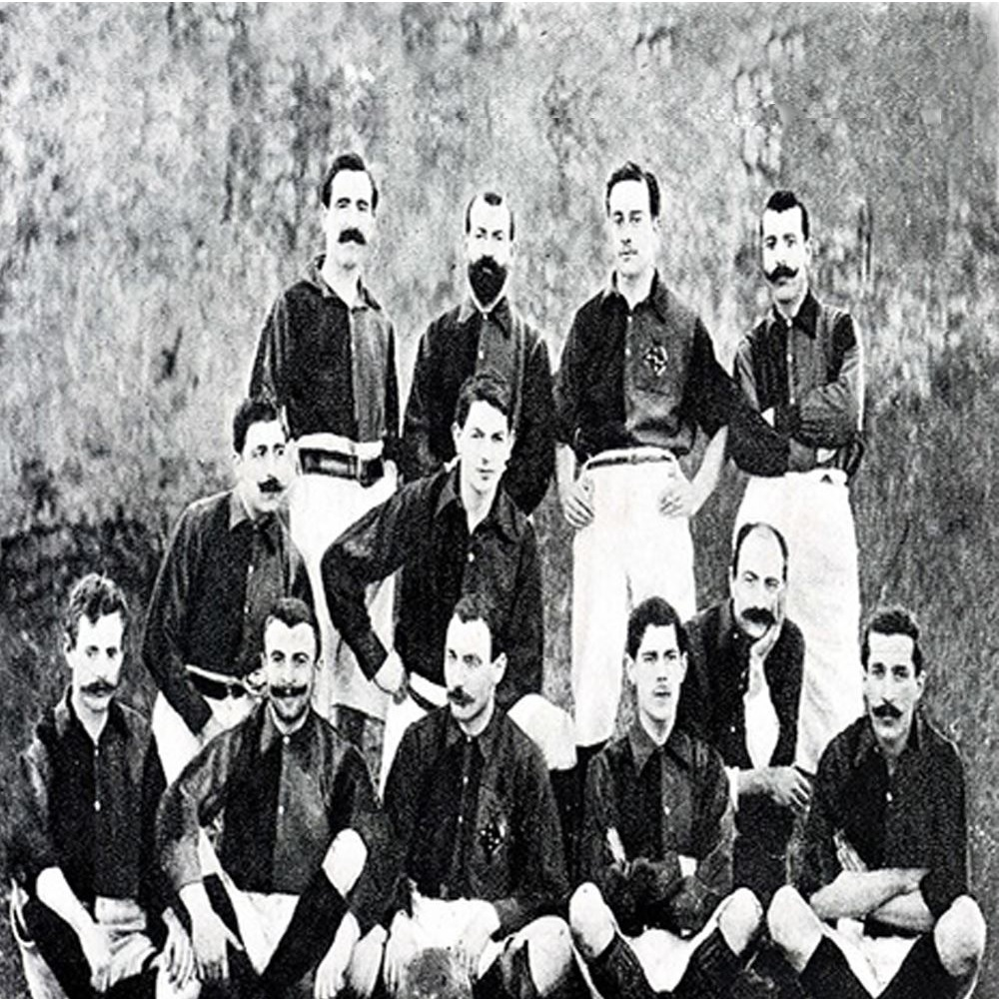

A klub megalapítása a Hans Gamper nevéhez fűződik. Gamper 1899. október 22-én hirdetést adott fel a helyi
sportmagazinban, egy barcelonai székhelyű labdarúgócsapat létrehozásának céljával. 1899. november 29-én Gamper
elnökletével Gimnas Soléban került sor az egyesület első gyűlésére. Az összejövetelen résztvevők névsora a
következő volt: Hans Gamper, Gualteri Wild, Lluis d'Ossó, Bartomeu Terradas, Otto Kunzle, Otto Maier,
Enric Ducal, Pere Cabot, Carles Pujol, Josep Llobet, John Parsons és William Parsons. A gyűlés határozata alapján
megalakult a klub, melynek első elnöke Gualteri Wild lett, aki feladatai mellett játékosként is szerepet vállalt
a csapat munkájában.
A csapat első mérkőzésére Bonanovában került sor, egy angol kivándorlókból álló csapat ellen. Az összecsapást az
angol együttes nyerte meg 1:0 arányban. A meccs érdekessége, hogy az angol csapatban néhány Barcelona játékos is
szerepelt a mérkőzés során. Az egyesület első, saját tulajdonú hazai pályájának hivatalos megnyitójára 1909.
március 14-én került sor
A klub az 1901-1902-es évadban megnyerte a Macaya Kupát, az 1904-1905-ös és az 1908-1909-es szezonban pedig katalán
kupát. Az utóbbin 1922-ig még nyolc alkalommal diadalmaskodtak (1910-ben, 1911-ben, 1913-ban, 1916-ban, 1919-ben,
1920-ban, 1921-ben és 1922-ben). Emellett a spanyol labdarúgókupában is eredményesen szerepelt a csapat és több
alkalommal is sikerült elhódítania a trófeát (1910-ben, 1912-ben, 1913-ban, 1920-ban és 1922-ben).
